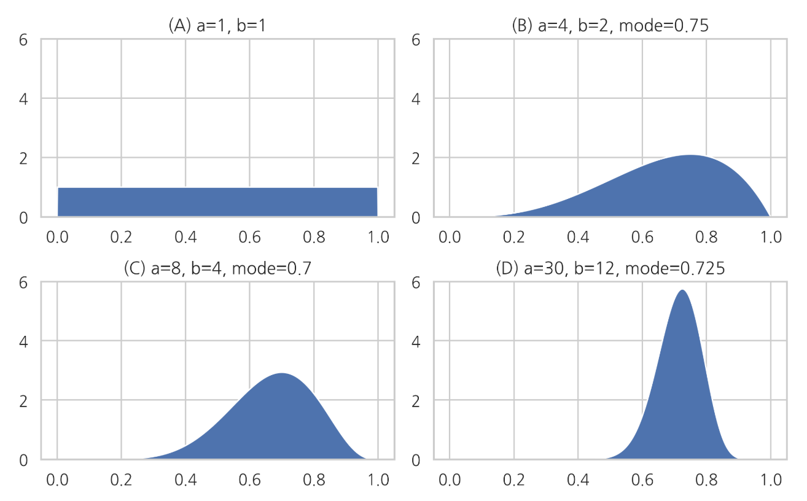
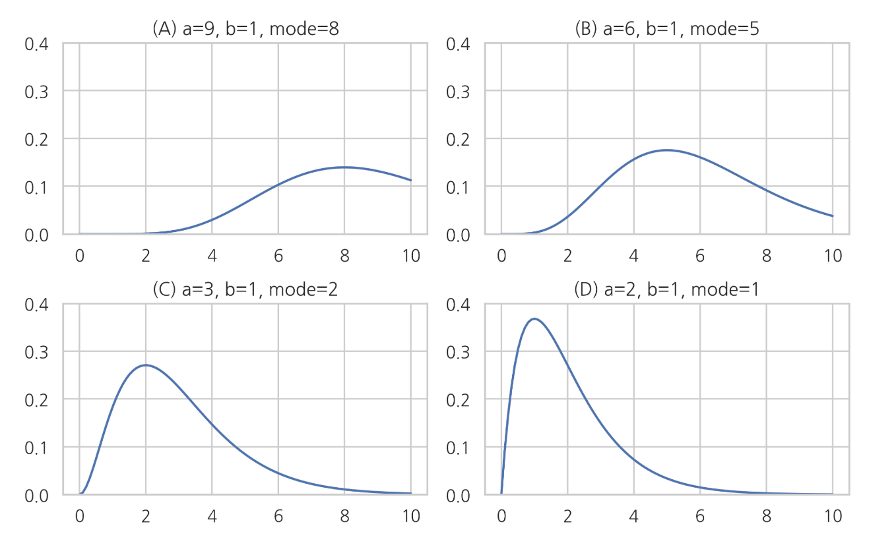

베타 분포, 감마 분포, 디리클레분포
Summary
- 베타분포, 감마분포, 디리클레분포는 모숫값을 조정하여 분포의 모양을 내가 원하는대로 쉽게 바꿀 수 있다.
- 모숫값은 분포 모양을 조절하는 조절값
- 베타분포는 0부터 1까지의 값을 가질 수 있는 베르누이 분포의 모수 의 값을 추정한 결과를 표현한 것이다. 자연계에 존재하는 분포보다는 모수의 베이지안 추정에 사용되는 분포입니다. 모수가 하나의 값이 아닌 분포로 묘사됩니다.
- 감마 분포(Gamma distribution)는 모수의 베이지안 추정에 사용 된다. 0부터 무한대의 값을 가지는 양수 값을 추정하는데 사용된다.
- 디리클레 분포(Dirichlet distribution)는 0과 1사이의 값을 가지는 다변수(multivariate) 확률변수의 베이지안 모형에 사용된다.
- 베이지안 추정은 모수가 가질 수 있는 모든 값에 대해 가능성을 확률분포로 나타낸 것을 말한다.
- 베이지안 확률론의 관점 에서 어떤 값에 대해 확신 혹은 신뢰의 정도를 표현하는데 주로 사용
베타 분포(Beta distribution)
베타 분포는 a와 b라는 두 개의 모수를 가지며 표본 공간은 0과 1 사이의 실수이다. 즉 0과 1 사이의 표본값만 가질 수 있다.
베타 분포의 확률밀도함수
는 감마 함수(Gamma funtion)이라는 특수 함수

모수 가 베타 분포의 모양을 결정하는 형상 인자(shape factor)라는 것을 알 수 있다. 베타 분포의 기댓값, 최빈값, 분산은 각각 다음과 같다.
기댓값
최빈값 : 확률분포가 가장 커지는 위치
분산 : 확률분포의 폭
최빈값 수식을 보면 일 때 에서 가장 확률밀도가 커지는 것을 알 수 있다. 또한 분산 수식에서 분모가 3차식, 분자가 2차식이기 때문에 의 값이 커질 수록 분산 즉, 확률분포의 폭이 작아진다.
베타 분포(Beta distribution)는 다른 확률 분포와 달리 자연계에 존재하는 데이터의 분포를 묘사하는 것 뿐 아니라 다른 확률분포함수의 모수를 베이지안 추정(Bayesian estimation)한 결과를 표현하기 위해 사용된다. 베이지안 추정은 모수가 가질 수 있는 모든 값에 대해 가능성을 확률분포로 나타낸 것을 말한다.
베타 분포는 0부터 1까지의 값을 가질 수 있는 베르누이 분포의 모수 의 값을 추정한 결과를 표현한 것이다.
위 그림이 베이지안 추정 결과라면 각각은 베르누이 분포의 모수 에 대해 다음과 같이 추정한 것과 같다.
- (A): 베르누이 분포의 모수 𝜇μ를 추정할 수 없다. (정보가 없음)
- (B): 베르누이 분포의 모수 𝜇μ값이 0.75일 가능성이 가장 크다. (정확도 낮음)
- (C): 베르누이 분포의 모수 𝜇μ값이 0.70일 가능성이 가장 크다. (정확도 중간)
- (D): 베르누이 분포의 모수 𝜇μ이 0.725일 가능성이 가장 크다. (정확도 높음)
감마 분포
감마 분포(Gamma distribution)는 모수의 베이지안 추정에 사용 된다. 0부터 무한대의 값을 가지는 양수 값을 추정하는데 사용된다.
감마 분포의 확률 밀도 함수
SciPy의 stats 서브패키지에서 제공하는 gamma 클래스는 모수 로 고정되어 값만 설정할 수 있다. 를 바꾸려면 값 스케일과 계수를 수동으로 설정하여야 한다
xx = np.linspace(0, 10, 100)
plt.subplot(221)
plt.plot(xx, sp.stats.gamma(9).pdf(xx))
plt.ylim(0, 0.4)
plt.title("(A) a=9, b=1, mode=8")
plt.subplot(222)
plt.plot(xx, sp.stats.gamma(6).pdf(xx))
plt.ylim(0, 0.4)
plt.title("(B) a=6, b=1, mode=5")
plt.subplot(223)
plt.plot(xx, sp.stats.gamma(3).pdf(xx))
plt.ylim(0, 0.4)
plt.title("(C) a=3, b=1, mode=2")
plt.subplot(224)
plt.plot(xx, sp.stats.gamma(2).pdf(xx))
plt.ylim(0, 0.4)
plt.title("(D) a=2, b=1, mode=1")
plt.tight_layout()
plt.show()

위 그림이 베이지안 추정 결과라면 각각은 모수에 대해 다음과 같이 추정한 것과 같다.
- A): 모수값이 8일 가능성이 가장 크다. (정확도 아주 낮음)
- (B): 모수값이 5일 가능성이 가장 크다. (정확도 낮음)
- (C): 모수값이 2일 가능성이 가장 크다. (정확도 높음)
- (D): 모수값이 1일 가능성이 가장 크다. (정확도 아주 높음)
감마의 분포의 기댓값, 최빈값, 분산은 아래와 같다.
기댓값
최빈값
분산
N(Nomal) - N(Nomal) - I(Inverse)G(Gamma) Model (=NNIG model)
베이지안 추정의 와 에서 는 정규 분포로 는 감마 분포로 나타낼 수 있다.
디리클레 분포
디리클레 분포(Dirichlet distribution)는 0과 1사이의 값을 가지는 다변수(multivariate) 확률변수의 베이지안 모형에 사용된다.
다변수 확률변수들의 합이 1이 되어야 한다는 제한 조건을 가진다.
디리클레 분포의 확률 밀도 함수
는 디리클레 분포의 모수 벡터이고 는 베타 함수라는 특수 함수이다
베타 분포와 디리클레 분포의 관계
베타 분포는 인 디리클레 분포라고 볼 수 있다.
즉 로 하면
디리클레 분포의 모멘트
디리클레 분포의 기댓값, 모드, 분산은 다음과 같다.
기댓값
모드
분산
기댓값 공식을 보면 모수인 는 중 어느 수가 더 크게 나올 가능성이 높은지를 결정하는 형상 인자(shape factor)임을 알 수 있다. 모든 값이 동일하면 모든 의 분포가 같아진다.
분산 공식을 보면 의 절대값이 클수록 분산이 작아진다. 즉, 디리클리 분포의 표본값 가 어떤 특정한 값 주변이 나올 가능성이 높아진다.